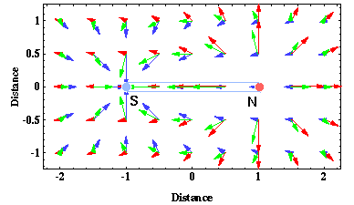
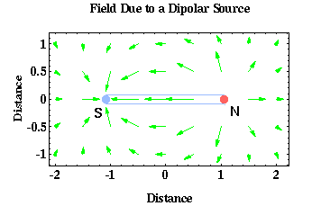

Magnetic Dipoles
So far everything seems pretty simple and directly comparable to gravitational forces, albeit with attractive and repulsive forces existing in the magnetic case when only attractive forces existed in the gravitational case. Now things start getting a bit more complicated. The magnetic monopoles that we have been describing have never actually been observed!!
Rather, the fundamental magnetic element appears to consist of two magnetic monopoles, one positive and one negative, separated by some distance. This fundamental magnetic element consisting of two monopoles is called a magnetic dipole.
Now let's see what the force looks like from this fundamental magnetic element, the magnetic dipole? Fortunately, we can derive the magnetic force produced by a dipole by considering the force produced by two magnetic monopoles. In fact, this is why we began our discussion on magnetism by looking at magnetic monopoles. If a dipole simply consists of two magnetic monopoles, you might expect that the force generated by a dipole is simply the force generated by one monopole added to the force generated by a second monopole. This is exactly right!!
On the previous page, we plotted the magnetic forces associated with two magnetic monopoles. These are reproduced below on the same figure as the red and purple arrows.

If we add these forces together using vector addition, we get the green arrows. These green arrows now indicate the force associated with a magnetic dipole consisting of a negative monopole at x = -1, labeled S, and a positive monopole at x = 1, labeled N. Shown below are the force arrows for this same magnetic dipole without the red and purple arrows indicating the monopole forces.

The force associated with this fundamental element of magnetism, the magnetic dipole, now looks more complicated than the simple force associated with gravity. Notice how the arrows describing the magnetic force appear to come out of the monopole labeled N and into the monopole labeled S.
You may recognize this force distribution. It is nothing more than the magnetic force distribution observed around a simple bar magnet. In fact, a bar magnet can be thought of as nothing more than two magnetic monopoles separated by the length of the magnet. The magnetic force appears to originate out of the north pole, N, of the magnet and to terminate at the south pole, S, of the magnet.